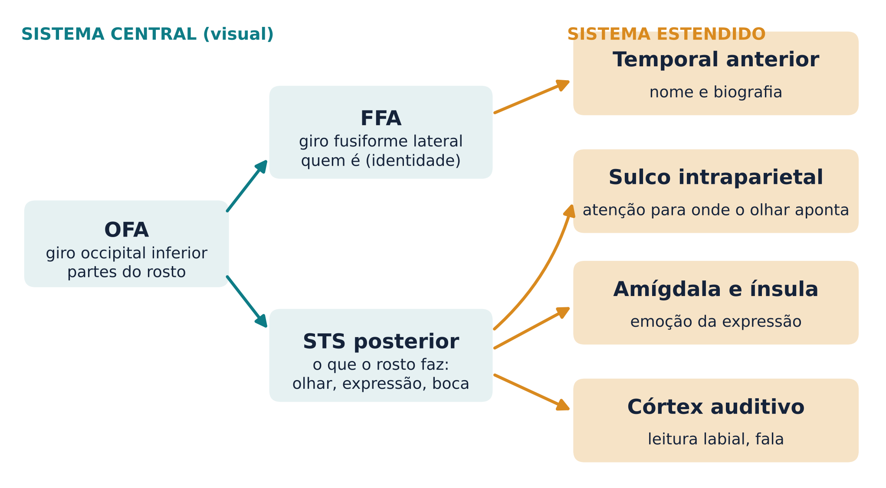
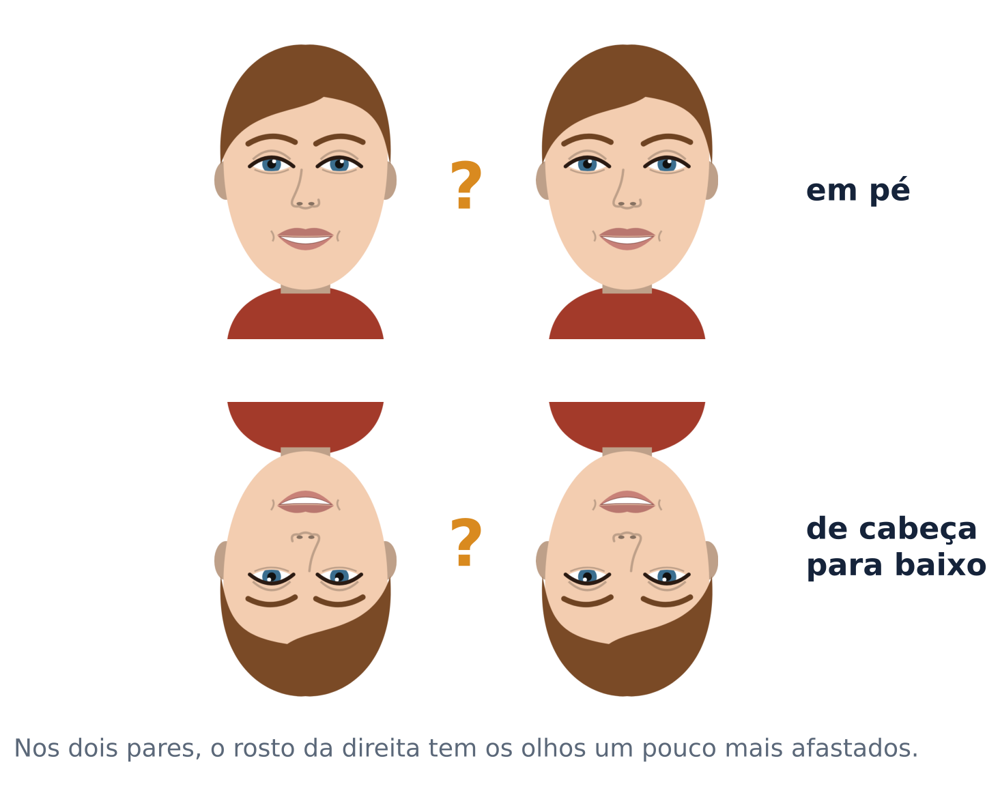
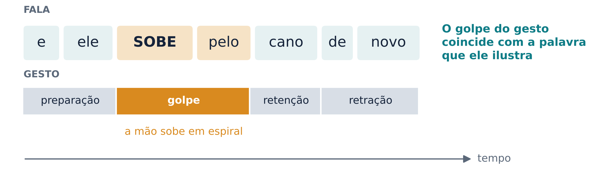
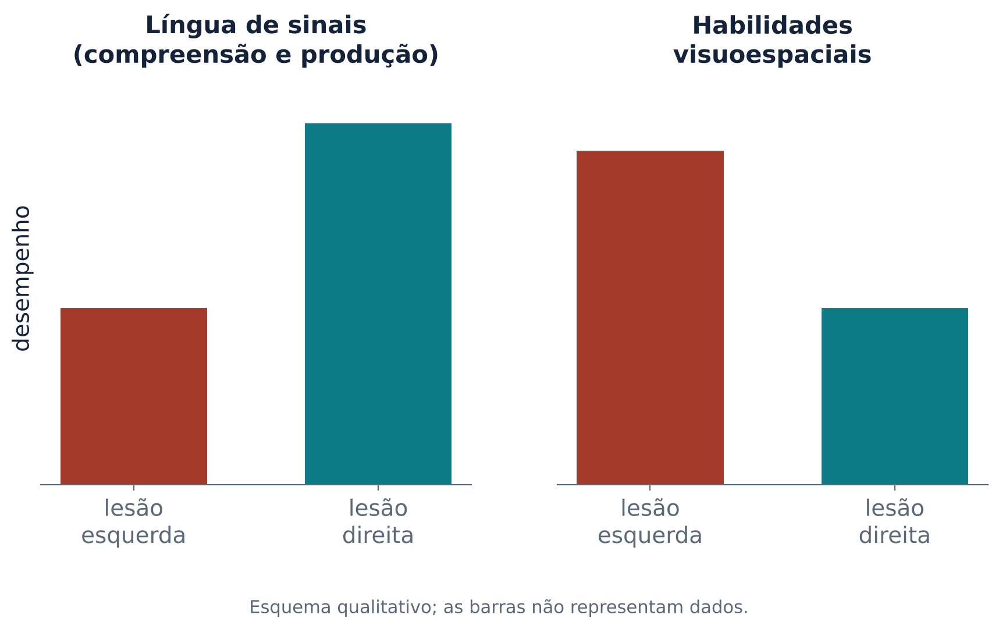
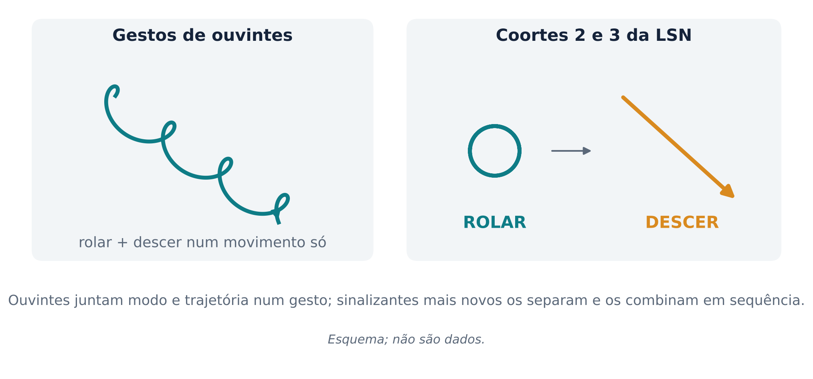
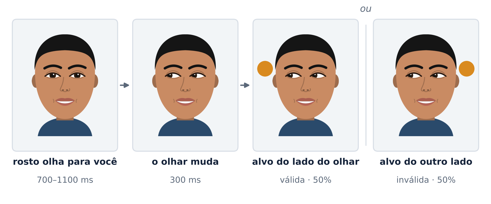

O cérebro lê rostos, segue olhares e entende mãos, e a rede da linguagem funciona mesmo sem som
Pense numa conversa num bar barulhento. Você não ouve metade das palavras, mas entende a amiga do outro lado da mesa. Ela revira os olhos quando fala do chefe, olha de relance para a porta quando alguém entra, desenha no ar o tamanho da pizza que comeu. Rosto, olhar e mãos carregam boa parte da mensagem.
As aulas anteriores trataram sobretudo da linguagem que entra pelo ouvido e sai pela boca. Esta aula trata dos canais visuais da comunicação. Ela termina com uma pergunta central: a rede de linguagem do hemisfério esquerdo é uma rede para o som ou para a linguagem? As línguas de sinais, que não usam som algum, são o teste natural dessa pergunta.
Em 1997, Nancy Kanwisher e colegas colocaram voluntários num aparelho de ressonância magnética funcional (fMRI, uma técnica que mede onde o fluxo de sangue no cérebro aumenta durante uma tarefa) e mostraram blocos de fotos de rostos e de objetos comuns. Uma região do giro fusiforme, na face inferior do lobo temporal, respondeu mais a rostos do que a objetos. Ela também respondeu mais a rostos intactos do que a rostos embaralhados, mais a rostos do que a casas e mais a rostos do que a mãos (Kanwisher; McDermott; Chun, 1997). Os autores a chamaram de área fusiforme de faces (FFA, do inglês fusiform face area). A resposta a rostos no giro fusiforme costuma ser mais forte no hemisfério direito (Mildner, 2008).
A FFA não trabalha sozinha. Uma região no giro occipital inferior, a área occipital de faces (OFA), e uma faixa do sulco temporal superior (STS) também respondem a rostos, nos dois hemisférios (Haxby; Hoffman; Gobbini, 2000).
A FFA é exclusiva para rostos? A área discorda. Isabel Gauthier e colegas testaram especialistas em carros e em pássaros. Para eles, fotos da categoria de que eram especialistas ativavam a FFA direita, e o grau de especialidade, medido num teste independente, previa essa ativação (Gauthier et al., 2000). Para esse grupo, a FFA seria uma área para distinguir exemplares muito parecidos de uma mesma categoria, coisa que fazemos com rostos todos os dias. Para Kanwisher e colegas, a seletividade para rostos se mantém mesmo quando se controlam atenção e categorização fina (Kanwisher; McDermott; Chun, 1997). Uma leitura cautelosa dos dados é que a FFA prefere rostos, mas não responde só a eles.
Macacos também têm áreas de rostos. Doris Tsao e colegas usaram fMRI para localizar a maior área de rostos no córtex temporal de dois macacos e, depois, registraram a atividade de neurônios isolados dentro dela. Quase todos os neurônios que respondiam a estímulos visuais (97%) eram fortemente seletivos para rostos (Tsao et al., 2006). No macaco, rostos ativam seis “manchas” (patches) de córtex ao longo da via visual ventral. Estimular eletricamente uma delas ativa as outras, o que mostra que elas formam uma rede interligada e hierárquica (Moeller; Freiwald; Tsao, 2008).
Essa rede é necessária para ver rostos normalmente. Em macacos, microestimular o centro de uma área de rostos distorce fortemente a percepção de rostos (Moeller et al., 2017). Em pacientes com eletrodos implantados para tratar epilepsia, estimular as regiões do fusiforme que preferem rostos fez o rosto real do médico parecer “metamorfoseado”, sem alterar a aparência de objetos (Parvizi et al., 2012).
Um rosto responde a duas perguntas diferentes. A primeira é quem é: a identidade, que não muda quando a pessoa sorri ou vira os olhos. A segunda é o que o rosto está fazendo: para onde olha, que expressão faz, como a boca se move. Haxby, Hoffman e Gobbini (2000) propuseram um modelo distribuído que separa essas perguntas (Figura 1). No sistema central, visual, a OFA analisa as partes do rosto; a FFA representa os aspectos que não mudam, ligados à identidade; e o STS posterior representa os aspectos que mudam, como olhar, expressão e movimentos da boca. O sistema estendido liga essas informações a outras redes: o lobo temporal anterior (nome e biografia da pessoa), o sulco intraparietal (atenção dirigida pelo olhar), a amígdala e a ínsula (emoção) e o córtex auditivo (percepção da fala a partir dos movimentos da boca).

O STS posterior é velho conhecido do curso: é a região que integra o que vemos e ouvimos na fala, como no efeito McGurk da aula 3. Ela também responde mais à fala acompanhada de gestos do que à fala sozinha (Dick; Broce, 2016), como veremos na seção 5.
O cérebro distingue rostos muito depressa. Com eletrodos no couro cabeludo (EEG), Bentin e colegas encontraram uma onda negativa por volta de 170 ms depois do aparecimento da imagem, o N170. Ela aparece para rostos humanos e não para outros estímulos, é maior sobre o lobo temporal posterior, com predomínio do hemisfério direito, e chega atrasada quando o rosto está de cabeça para baixo (Bentin et al., 1996).
A prosopagnosia é a incapacidade de reconhecer rostos. Na forma adquirida, ela aparece depois de lesões nos lobos occipital e temporal, com frequência no giro fusiforme (Mildner, 2008). A pessoa enxerga o rosto, mas não sabe de quem ele é.
Existe também uma forma congênita ou do desenvolvimento, sem lesão visível. Num levantamento com 689 estudantes, Kennerknecht e colegas encontraram uma prevalência de 2,47%, e todos os casos cujas famílias foram examinadas tinham parentes de primeiro grau com a mesma dificuldade (Kennerknecht et al., 2006). Ou seja: numa turma de 40 alunos, é razoável esperar cerca de uma pessoa com dificuldade real para reconhecer rostos.
O rosto é decodificado por uma rede, não por um “centro”. Áreas diferentes respondem a perguntas diferentes (quem é, o que sente, para onde olha), e a mesma organização geral aparece em macacos. Lesões ou estimulação em pontos dessa rede mudam a forma como vemos rostos.
Tente reconhecer um amigo numa foto de cabeça para baixo. É surpreendentemente difícil. Robert Yin comparou a memória para várias classes de objetos que costumamos ver numa só orientação: rostos, casas, aviões, figuras humanas em movimento. Todas ficaram mais difíceis invertidas, mas a perda foi muito maior para rostos: mais de 25 pontos percentuais, contra 2 a 10 pontos para as outras classes (Yin, 1969, conforme descrito por Diamond; Carey, 1986). Esse é o efeito de inversão.
Por que a inversão atrapalha tanto? Um rosto é reconhecido sobretudo pelas relações entre as partes: a distância entre os olhos, a altura da boca, a posição do nariz. Isso se chama processamento configural ou holístico (“do todo”). Tanaka e Farah (1993) mostraram que uma parte de um rosto, como o nariz, é reconhecida melhor quando aparece dentro do rosto inteiro do que sozinha. Essa vantagem do todo não apareceu para rostos embaralhados, rostos invertidos nem casas.

Peter Thompson (1980) descreveu uma ilusão com uma foto de Margaret Thatcher, então primeira-ministra britânica. Ele virou os olhos e a boca de cabeça para baixo dentro do rosto. Em pé, o resultado é grotesco. Com a foto inteira invertida, o rosto parece quase normal. Murray, Yong e Rhodes (2000) pediram a voluntários que dessem notas de estranheza a rostos girados em vários ângulos. Para rostos com olhos e boca invertidos, a estranheza não cresceu aos poucos: houve um salto entre 90° e 120°. Para os autores, rostos em pé e invertidos são processados de modos qualitativamente diferentes, porque a inversão prejudica sobretudo a leitura das relações espaciais entre as partes.
Compare o seu olho com o de um chimpanzé. O nosso tem uma esclera (a parte “branca”) muito exposta em volta da íris escura. Kobayashi e Kohshima (1997) examinaram cerca de metade das espécies de primatas e concluíram que os humanos têm a maior proporção de esclera exposta, num olho alongado na horizontal. Com isso, fica fácil ver para onde uma pessoa está olhando.
Por que um olho que “entrega” a direção do olhar seria vantajoso? A hipótese do olho cooperativo propõe que ele evoluiu numa espécie em que vale a pena mostrar aos outros onde está a sua atenção. Tomasello e colegas testaram uma previsão dessa hipótese. Um experimentador olhava para cima só com os olhos, só com a cabeça (de olhos fechados), com os dois ou com nenhum. Os grandes macacos seguiram sobretudo a direção da cabeça. Os bebês humanos se guiaram quase só pelos olhos (Tomasello et al., 2007).
Em macacos, há células do córtex temporal que respondem a rostos e são sensíveis à direção do olhar: algumas preferem olhos que encaram o observador, outras olhos desviados (Perrett et al., 1985). Em humanos, a sensibilidade ao olhar aparece cedo. Recém-nascidos de 2 a 5 dias já distinguem um rosto que os olha de frente de um que desvia o olhar (Farroni et al., 2002). Por volta dos 9 aos 12 meses, os bebês passam a olhar de forma flexível e confiável para onde o adulto olha. Esse é o início da atenção compartilhada, o triângulo entre criança, adulto e objeto sobre o qual, segundo Tomasello (2003), se apoia a aprendizagem das primeiras palavras.
Seguir o olhar é, em boa parte, automático. Friesen e Kingstone (1998) mostraram um rosto desenhado que olhava para a esquerda, para a direita ou para frente, e logo depois uma letra aparecia de um dos lados. Os participantes sabiam que a direção do olhar não previa onde a letra apareceria. Mesmo assim, responderam mais rápido quando a letra surgia do lado para onde o rosto olhava. O efeito apareceu com intervalos de 105, 300 e 600 ms entre o olhar e o alvo e sumiu com 1.005 ms. É um deslocamento reflexivo da atenção: rápido, de curta duração e difícil de evitar. Esse é o experimento 1 do laboratório (seção 8).
O olhar também importa para o desenvolvimento social. Num estudo que acompanhou bebês com rastreamento ocular, os que mais tarde receberam diagnóstico de autismo olhavam para os olhos normalmente no início, mas essa atenção diminuiu entre os 2 e os 6 meses de idade (Jones; Klin, 2013).
Todo mundo gesticula ao falar. Gestos aparecem em todas as comunidades estudadas, embora a frequência varie entre culturas e pessoas (Özyürek; Woll, 2019). Os pesquisadores costumam distinguir alguns tipos (Dick; Broce, 2016):
Os gestos que acompanham a fala não são enfeite. Quando aparecem, quase sempre estão alinhados no tempo com a parte da frase a que se referem, e gesto e fala parecem partir de uma mesma mensagem conceitual (Özyürek; Woll, 2019). O gesto, porém, é contínuo e imagético, enquanto a fala é feita de unidades discretas, como palavras (Demir; Goldin-Meadow, 2016). Por isso o gesto consegue acrescentar informação que não está nas palavras: a frase “ele subiu pelo cano” não diz que a subida foi em espiral; a mão diz (Figura 3).

Quem ouve aproveita o gesto. Ouvintes captam informações que aparecem só no gesto e, quando gesto e fala se contradizem, entendem pior a própria fala (Demir; Goldin-Meadow, 2016). O cérebro integra os dois canais. Özyürek e colegas registraram o EEG enquanto voluntários ouviam frases acompanhadas de gestos. Quando o gesto não combinava com o contexto da frase, surgiu uma onda N400, o mesmo sinal de “isto não faz sentido” que aparece para palavras incongruentes (aula 5), com latência, amplitude e distribuição parecidas (Özyürek et al., 2007). Com fMRI, aumentar a dificuldade de integrar gesto ou palavra à frase ativou a área de Broca e o córtex vizinho (Willems; Özyürek; Hagoort, 2007). Numa revisão, Dick e Broce (2016) concluem que o giro frontal inferior e a parte posterior do giro temporal médio, as duas regiões mais ligadas ao significado na compreensão da fala, também participam da integração entre gesto e fala.
Se o gesto servisse só para o ouvinte, sumiria quando ninguém está vendo. Não é o que acontece. Pessoas cegas de nascença, que nunca viram ninguém gesticular, gesticulam ao falar, até quando conversam com outro cego (Iverson; Goldin-Meadow, 1998). Por isso, os pesquisadores investigam também funções do gesto para quem fala:
As línguas de sinais das comunidades surdas são línguas naturais, com estrutura em todos os níveis: fonologia, morfologia, vocabulário, gramática e discurso. Elas não derivam das línguas faladas ao redor (Özyürek; Woll, 2019). Não existe uma língua de sinais universal: há muitas comunidades de sinalizantes, cada uma com sua língua, e a língua de sinais americana (ASL) e a britânica (BSL), por exemplo, são línguas completamente distintas (Corina; Blau, 2016).
Desde os trabalhos de William Stokoe sobre a ASL, em 1960, sabemos que um sinal se decompõe em partes sem significado: a configuração de mão, a locação (onde o sinal é feito) e o movimento. Trocar só uma dessas partes produz outro sinal, exatamente como trocar um fonema transforma “pato” em “gato”. São os pares mínimos (Özyürek; Woll, 2019). As línguas de sinais também usam o espaço para a gramática. Pessoas e objetos ganham um lugar no espaço à frente de quem sinaliza, e verbos se movem entre esses lugares para indicar quem fez o quê a quem (Corina; Blau, 2016; Özyürek; Woll, 2019). Além das mãos, os movimentos do rosto e do corpo também são usados de forma sistemática e convencional para a expressão linguística (Özyürek; Woll, 2019).
No Brasil, a Língua Brasileira de Sinais (Libras) foi reconhecida pela Lei 10.436, de 2002, como “meio legal de comunicação e expressão”, com “estrutura gramatical própria”, oriunda das comunidades de pessoas surdas do Brasil (Brasil, 2002). O Decreto 5.626, de 2005, tornou a Libras disciplina curricular obrigatória nos cursos de formação de professores e de fonoaudiologia (Brasil, 2005). Ou seja, a Libras não é português feito com as mãos.
Se a rede perissilviana esquerda (as regiões em volta da fissura lateral, como as áreas de Broca e de Wernicke) servisse ao som, lesões nela deveriam poupar as línguas de sinais. E, como as línguas de sinais dependem de processamento visuoespacial, tarefa em que o hemisfério direito é forte, lesões à direita deveriam prejudicá-las. Os dados mostram o contrário. Hickok, Bellugi e Klima (1996) estudaram 23 sinalizantes com lesão em um só hemisfério e encontraram a mesma vantagem do hemisfério esquerdo que existe para as línguas faladas (Figura 4).

Os quadros se parecem com as afasias de ouvintes (Corina; Blau, 2016). Uma paciente com lesão frontal esquerda grande, que incluía a área de Broca, sinalizava de forma lenta, hesitante e telegráfica, mas compreendia bem. Outros pacientes, com lesões esquerdas mais posteriores, sinalizavam com fluência, mas com erros e dificuldade de compreensão. Há até o equivalente da troca de fonemas: um paciente fez o sinal IRMÃ da ASL com a configuração de mão errada, como quem diz “irnã” em vez de “irmã”. Esses erros aparecem também na mão esquerda, que não está fraca depois de uma lesão esquerda, o que indica um problema de linguagem e não de movimento.
E a lesão direita? Um sinalizante com lesão grande no hemisfério direito tinha heminegligência, um distúrbio de atenção que faz ignorar o lado esquerdo do espaço, mas tinha a compreensão da língua de sinais notavelmente preservada (Corina; Blau, 2016). O hemisfério direito não fica de fora, porém. Lesões à direita podem atrapalhar o discurso, como em ouvintes, e a compreensão de construções que mapeiam o espaço real, como as que dizem “a caneta está em cima do livro” posicionando as mãos (Corina; Blau, 2016).
A neuroimagem confirma o quadro. Compreender frases em BSL, em surdos nativos, e frases em inglês, vistas e ouvidas por ouvintes que não sabem sinais, ativa regiões em comum no frontal inferior (incluindo a área de Broca) e no temporal superior (MacSweeney et al., 2002). Na maioria dos estudos de compreensão de frases em sinais, a ativação predomina no hemisfério esquerdo, como na fala (Corina; Blau, 2016). Em surdos, regiões temporais em geral associadas à audição também respondem a sinais (MacSweeney et al., 2002; Corina; Blau, 2016). Durante uma cirurgia com o paciente acordado, estimular a área de Broca de um sinalizante surdo produziu sinais mal articulados, e estimular o giro supramarginal produziu erros na escolha das partes do sinal (Corina; Blau, 2016).
Há um debate sobre o papel do hemisfério direito. Vários estudos encontraram, além das áreas clássicas da esquerda, ativação no temporal superior, no frontal inferior e no parietal posterior do hemisfério direito durante a compreensão de frases em sinais. Parte dessa ativação parece vir da leitura do rosto, que faz parte do sinal, e parte se parece com a que ouvintes também mostram para a fala audiovisual; regiões parietais e temporais direitas talvez tenham um papel próprio nas línguas de sinais (Corina; Blau, 2016).
A rede central da linguagem no hemisfério esquerdo é a mesma para a fala e para os sinais. O que muda são as “portas” de entrada e saída: olhos e mãos no lugar de ouvidos e boca. A linguagem não depende do som.
Peça a alguém que conte “a menina chuta a bola” só com gestos, sem falar. Goldin-Meadow e colegas fizeram isso com falantes de inglês, turco, espanhol e chinês, línguas com ordens de palavras diferentes. Todos usaram a mesma ordem: agente, paciente, ação (“menina, bola, chutar”). Em termos gramaticais, é uma ordem sujeito-objeto-verbo. A mesma ordem apareceu numa tarefa sem comunicação, em que as pessoas reconstruíam o evento com figuras (Goldin-Meadow et al., 2008). A ordem da fala não passa automaticamente para as mãos.
A maioria das crianças surdas nasce de pais ouvintes, que em geral não sabem uma língua de sinais. Sem acesso a uma língua, essas crianças criam um sistema de gestos para se comunicar com a família, o homesign (Goldin-Meadow, 2019). Ele tem um vocabulário estável, partes com significado dentro dos gestos, frases com ordem consistente e até frases com mais de uma proposição. Crianças nos Estados Unidos e na China, que nunca se viram, criaram sistemas com estruturas parecidas (Goldin-Meadow; Mylander, 1998). Essa estrutura não vem dos gestos das mães, que são mais simples e menos regulares do que os das crianças (Goldin-Meadow, 2019).
Antes de 1977, os surdos da Nicarágua tinham poucas chances de conviver entre si. Entre 1977 e 1983, dois programas educacionais reuniram mais de 400 alunos surdos. O ensino não era em sinais, mas as crianças se comunicavam livremente por gestos, e dali nasceu uma língua nova, a Língua de Sinais da Nicarágua (Goldin-Meadow, 2019). As coortes seguintes, que aprenderam com as mais velhas, tornaram a língua mais regular. Sinalizantes da segunda coorte expostos à língua antes dos 10 anos usavam mais o espaço para marcar quem é quem do que os da primeira coorte (Senghas; Coppola, 2001).
Senghas, Kita e Özyürek (2004) compararam como ouvintes e sinalizantes descreviam algo que desce um morro rolando. Ouvintes falantes de espanhol faziam um gesto só, que juntava o modo (rolar) e a trajetória (descer). Os sinalizantes da segunda e da terceira coortes separavam as duas ideias em unidades e as combinavam em sequência (Figura 5). Para os autores, as primeiras crianças já dividiam eventos em elementos básicos, e as coortes seguintes ampliaram esse procedimento. Dividir e recombinar seria um dos mecanismos com que as crianças aprendem a língua e, ao aprender, a moldam (Senghas; Kita; Özyürek, 2004).

No Laboratório de Rostos e Gestos, você foi o participante de versões curtas de experimentos clássicos. Com poucas tentativas por pessoa, os resultados individuais são ruidosos; o que importa é o padrão da turma no placar.
Experimento 1 · Siga o olhar. Um rosto desenhado olhava para um lado e, 300 ms depois, um círculo aparecia de um dos lados (Figura 6). O olhar acertava o lado só na metade das vezes, e você sabia disso. A previsão, a partir de Friesen e Kingstone (1998), é que a maioria responda um pouco mais rápido quando o círculo aparece do lado do olhar: um efeito pequeno, que aparece mesmo sem nenhuma vantagem em seguir o olhar. É o reflexo social descrito na seção 4.

Experimento 2 · Rostos invertidos. Você julgou se dois rostos eram iguais ou diferentes; as diferenças eram de configuração (olhos mais afastados, olhos ou boca mais altos). A mudança física era a mesma nas duas orientações. Espera-se que a maioria acerte menos com os rostos invertidos (Yin, 1969; Murray; Yong; Rhodes, 2000).
Experimento 3 · Ilusão de Thatcher. Rostos com olhos e boca virados pareciam muito estranhos em pé e quase normais invertidos. Ao girar o rosto, a estranheza deve ter aparecido de repente, por volta de 90° a 120° (Murray; Yong; Rhodes, 2000). Os experimentos 2 e 3 contam a mesma história: a configuração do rosto só é bem lida na orientação habitual.
Experimento 4 · Fale sem voz. Na parte A, o diálogo encenado sem som deve ter ficado bem mais difícil de decifrar quando os voluntários pararam as mãos e o rosto: boa parte da mensagem estava ali, além da leitura labial (aula 3). Na parte B, em dupla, a previsão é que a maioria tenha posto o objeto antes da ação (“menina, bola, chutar”), embora o português use sujeito-verbo-objeto (Goldin-Meadow et al., 2008). Um cuidado: a palavra escrita da ação na tela pode puxar alguns de vocês para a ordem do português.
Demonstração 5 · Libras. Soletrar o próprio nome mostra como a datilologia (o alfabeto manual) é lenta. Ela é só um recurso dentro da Libras, uma língua com estrutura gramatical própria (Brasil, 2002).
Uma colega diz que “a FFA é o centro do cérebro que reconhece rostos”. O que está certo e o que está errado nessa frase?
Resposta
Está certo que a FFA responde mais a rostos do que a outros objetos. Está errado chamá-la de “centro”: ela faz parte de uma rede (OFA, STS, temporal anterior, amígdala) em que cada região responde a uma pergunta diferente. Além disso, ela não é exclusiva para rostos: especialistas em carros ou pássaros a ativam com sua categoria.
Por que uma pessoa pode reconhecer a expressão de raiva num rosto, mas não saber de quem é esse rosto?
Resposta
No modelo de Haxby, identidade e aspectos que mudam (expressão, olhar) são processados por vias em parte separadas: a FFA para a identidade e o STS posterior para o que o rosto está fazendo. Uma lesão pode atingir uma via e poupar a outra, como na prosopagnosia.
Os experimentos 2 e 3 do laboratório usam a mesma lógica. Qual é ela?
Resposta
Em ambos, a mudança física no rosto é idêntica em pé e invertida, mas a percepção muda muito. Isso mostra que o rosto em pé é lido pela configuração (as relações entre as partes) e que essa leitura falha quando o rosto está invertido.
Que vantagem evolutiva poderia ter um olho que facilita aos outros saber para onde olhamos?
Resposta
Segundo a hipótese do olho cooperativo, mostrar a direção da atenção é vantajoso numa espécie que coopera e se comunica de perto. Bebês humanos seguem sobretudo os olhos, enquanto grandes macacos seguem sobretudo a cabeça, o que é compatível com essa hipótese.
Por que as pessoas gesticulam ao telefone, se ninguém pode vê-las?
Resposta
Porque o gesto não serve só ao ouvinte: ele faz parte do próprio ato de falar. Impedidos de gesticular, falamos com menos fluência sobre conteúdos espaciais, e gesticular alivia a memória durante uma explicação. Cegos de nascença gesticulam até com ouvintes cegos.
Por que estudar sinalizantes surdos com lesão cerebral ajuda a decidir se a rede perissilviana esquerda é “da audição” ou “da linguagem”?
Resposta
Línguas de sinais não usam som e dependem muito de processamento visuoespacial. Se a rede esquerda fosse auditiva, lesões nela poupariam os sinais. Na verdade, lesões esquerdas causam afasia de sinais e lesões direitas poupam a língua, o que indica uma rede para a linguagem, qualquer que seja o canal.
O que o caso da Nicarágua mostra que o homesign sozinho não mostra?
Resposta
O homesign mostra que uma criança isolada cria um sistema com estrutura. A Nicarágua mostra o que acontece quando esses sistemas se encontram numa comunidade e passam de uma geração de crianças para a seguinte: a língua se torna mais regular e combinatória, por exemplo separando “rolar” e “descer” em unidades.
BENTIN, S. et al. Electrophysiological studies of face perception in humans. Journal of Cognitive Neuroscience, v. 8, n. 6, p. 551-565, 1996. DOI: https://doi.org/10.1162/jocn.1996.8.6.551.
BRASIL. Lei nº 10.436, de 24 de abril de 2002. Dispõe sobre a Língua Brasileira de Sinais - Libras e dá outras providências. Brasília, DF: Presidência da República, 2002. Disponível em: http://www.planalto.gov.br/ccivil_03/leis/2002/l10436.htm. Acesso em: 3 out. 2026.
BRASIL. Decreto nº 5.626, de 22 de dezembro de 2005. Regulamenta a Lei nº 10.436, de 24 de abril de 2002, que dispõe sobre a Língua Brasileira de Sinais - Libras, e o art. 18 da Lei nº 10.098, de 19 de dezembro de 2000. Brasília, DF: Presidência da República, 2005. Disponível em: http://www.planalto.gov.br/ccivil_03/_ato2004-2006/2005/decreto/d5626.htm. Acesso em: 3 out. 2026.
CHURCH, R. B.; GOLDIN-MEADOW, S. The mismatch between gesture and speech as an index of transitional knowledge. Cognition, v. 23, n. 1, p. 43-71, 1986. DOI: https://doi.org/10.1016/0010-0277(86)90053-3.
CORINA, D. P.; BLAU, S. Neurobiology of sign languages. In: HICKOK, G.; SMALL, S. L. (org.). Neurobiology of language. London: Academic Press, 2016. p. 431-443.
DEMIR, Ö. E.; GOLDIN-MEADOW, S. Gesture’s role in learning and processing language. In: HICKOK, G.; SMALL, S. L. (org.). Neurobiology of language. London: Academic Press, 2016. p. 275-283.
DIAMOND, R.; CAREY, S. Why faces are and are not special: an effect of expertise. Journal of Experimental Psychology: General, v. 115, n. 2, p. 107-117, 1986. DOI: https://doi.org/10.1037/0096-3445.115.2.107.
DICK, A. S.; BROCE, I. The neurobiology of gesture and its development. In: HICKOK, G.; SMALL, S. L. (org.). Neurobiology of language. London: Academic Press, 2016. p. 389-398.
FARRONI, T. et al. Eye contact detection in humans from birth. Proceedings of the National Academy of Sciences, v. 99, n. 14, p. 9602-9605, 2002. DOI: https://doi.org/10.1073/pnas.152159999.
FRIESEN, C. K.; KINGSTONE, A. The eyes have it! Reflexive orienting is triggered by nonpredictive gaze. Psychonomic Bulletin & Review, v. 5, n. 3, p. 490-495, 1998. DOI: https://doi.org/10.3758/BF03208827.
GAUTHIER, I. et al. Expertise for cars and birds recruits brain areas involved in face recognition. Nature Neuroscience, v. 3, n. 2, p. 191-197, 2000. DOI: https://doi.org/10.1038/72140.
GOLDIN-MEADOW, S. The resilience of language: homesign. In: HAGOORT, P. (org.). Human language: from genes and brains to behavior. Cambridge, MA: The MIT Press, 2019. p. 221-233.
GOLDIN-MEADOW, S. et al. Explaining math: gesturing lightens the load. Psychological Science, v. 12, n. 6, p. 516-522, 2001. DOI: https://doi.org/10.1111/1467-9280.00395.
GOLDIN-MEADOW, S. et al. The natural order of events: how speakers of different languages represent events nonverbally. Proceedings of the National Academy of Sciences, v. 105, n. 27, p. 9163-9168, 2008. DOI: https://doi.org/10.1073/pnas.0710060105.
GOLDIN-MEADOW, S.; ALIBALI, M. W. Gesture’s role in speaking, learning, and creating language. Annual Review of Psychology, v. 64, p. 257-283, 2013. DOI: https://doi.org/10.1146/annurev-psych-113011-143802.
GOLDIN-MEADOW, S.; MYLANDER, C. Spontaneous sign systems created by deaf children in two cultures. Nature, v. 391, n. 6664, p. 279-281, 1998. DOI: https://doi.org/10.1038/34646.
HAXBY, J. V.; HOFFMAN, E. A.; GOBBINI, M. I. The distributed human neural system for face perception. Trends in Cognitive Sciences, v. 4, n. 6, p. 223-233, 2000. DOI: https://doi.org/10.1016/S1364-6613(00)01482-0.
HICKOK, G.; BELLUGI, U.; KLIMA, E. S. The neurobiology of sign language and its implications for the neural basis of language. Nature, v. 381, n. 6584, p. 699-702, 1996. DOI: https://doi.org/10.1038/381699a0.
HICKOK, G.; BELLUGI, U.; KLIMA, E. S. Sign language in the brain. Scientific American, v. 284, n. 6, p. 58-65, 2001. DOI: https://doi.org/10.1038/scientificamerican0601-58.
IVERSON, J. M.; GOLDIN-MEADOW, S. Why people gesture when they speak. Nature, v. 396, n. 6708, p. 228, 1998. DOI: https://doi.org/10.1038/24300.
JONES, W.; KLIN, A. Attention to eyes is present but in decline in 2-6-month-old infants later diagnosed with autism. Nature, v. 504, n. 7480, p. 427-431, 2013. DOI: https://doi.org/10.1038/nature12715.
KANWISHER, N.; McDERMOTT, J.; CHUN, M. M. The fusiform face area: a module in human extrastriate cortex specialized for face perception. Journal of Neuroscience, v. 17, n. 11, p. 4302-4311, 1997. DOI: https://doi.org/10.1523/JNEUROSCI.17-11-04302.1997.
KENNERKNECHT, I. et al. First report of prevalence of non-syndromic hereditary prosopagnosia (HPA). American Journal of Medical Genetics Part A, v. 140A, n. 15, p. 1617-1622, 2006. DOI: https://doi.org/10.1002/ajmg.a.31343.
KOBAYASHI, H.; KOHSHIMA, S. Unique morphology of the human eye. Nature, v. 387, n. 6635, p. 767-768, 1997. DOI: https://doi.org/10.1038/42842.
MacSWEENEY, M. et al. Neural systems underlying British Sign Language and audio-visual English processing in native users. Brain, v. 125, n. 7, p. 1583-1593, 2002. DOI: https://doi.org/10.1093/brain/awf153.
McNEILL, D. Hand and mind: what gestures reveal about thought. Chicago: University of Chicago Press, 1992.
MILDNER, V. The cognitive neuroscience of human communication. New York: Lawrence Erlbaum Associates, 2008.
MOELLER, S. et al. The effect of face patch microstimulation on perception of faces and objects. Nature Neuroscience, v. 20, n. 5, p. 743-752, 2017. DOI: https://doi.org/10.1038/nn.4527.
MOELLER, S.; FREIWALD, W. A.; TSAO, D. Y. Patches with links: a unified system for processing faces in the macaque temporal lobe. Science, v. 320, n. 5881, p. 1355-1359, 2008. DOI: https://doi.org/10.1126/science.1157436.
MURRAY, J. E.; YONG, E.; RHODES, G. Revisiting the perception of upside-down faces. Psychological Science, v. 11, n. 6, p. 492-496, 2000. DOI: https://doi.org/10.1111/1467-9280.00294.
ÖZYÜREK, A. et al. On-line integration of semantic information from speech and gesture: insights from event-related brain potentials. Journal of Cognitive Neuroscience, v. 19, n. 4, p. 605-616, 2007. DOI: https://doi.org/10.1162/jocn.2007.19.4.605.
ÖZYÜREK, A.; WOLL, B. Language in the visual modality: co-speech gesture and sign language. In: HAGOORT, P. (org.). Human language: from genes and brains to behavior. Cambridge, MA: The MIT Press, 2019. p. 67-83.
PARVIZI, J. et al. Electrical stimulation of human fusiform face-selective regions distorts face perception. Journal of Neuroscience, v. 32, n. 43, p. 14915-14920, 2012. DOI: https://doi.org/10.1523/JNEUROSCI.2609-12.2012.
PERRETT, D. I. et al. Visual cells in the temporal cortex sensitive to face view and gaze direction. Proceedings of the Royal Society of London. Series B: Biological Sciences, v. 223, n. 1232, p. 293-317, 1985. DOI: https://doi.org/10.1098/rspb.1985.0003.
RAUSCHER, F. H.; KRAUSS, R. M.; CHEN, Y. Gesture, speech, and lexical access: the role of lexical movements in speech production. Psychological Science, v. 7, n. 4, p. 226-231, 1996. DOI: https://doi.org/10.1111/j.1467-9280.1996.tb00364.x.
SENGHAS, A.; COPPOLA, M. Children creating language: how Nicaraguan Sign Language acquired a spatial grammar. Psychological Science, v. 12, n. 4, p. 323-328, 2001. DOI: https://doi.org/10.1111/1467-9280.00359.
SENGHAS, A.; KITA, S.; ÖZYÜREK, A. Children creating core properties of language: evidence from an emerging sign language in Nicaragua. Science, v. 305, n. 5691, p. 1779-1782, 2004. DOI: https://doi.org/10.1126/science.1100199.
TANAKA, J. W.; FARAH, M. J. Parts and wholes in face recognition. The Quarterly Journal of Experimental Psychology Section A, v. 46, n. 2, p. 225-245, 1993. DOI: https://doi.org/10.1080/14640749308401045.
THOMPSON, P. Margaret Thatcher: a new illusion. Perception, v. 9, n. 4, p. 483-484, 1980. DOI: https://doi.org/10.1068/p090483.
TOMASELLO, M. Constructing a language: a usage-based theory of language acquisition. Cambridge, MA: Harvard University Press, 2003.
TOMASELLO, M. et al. Reliance on head versus eyes in the gaze following of great apes and human infants: the cooperative eye hypothesis. Journal of Human Evolution, v. 52, n. 3, p. 314-320, 2007. DOI: https://doi.org/10.1016/j.jhevol.2006.10.001.
TSAO, D. Y. et al. A cortical region consisting entirely of face-selective cells. Science, v. 311, n. 5761, p. 670-674, 2006. DOI: https://doi.org/10.1126/science.1119983.
WILLEMS, R. M.; ÖZYÜREK, A.; HAGOORT, P. When language meets action: the neural integration of gesture and speech. Cerebral Cortex, v. 17, n. 10, p. 2322-2333, 2007. DOI: https://doi.org/10.1093/cercor/bhl141.
YIN, R. K. Looking at upside-down faces. Journal of Experimental Psychology, v. 81, n. 1, p. 141-145, 1969. DOI: https://doi.org/10.1037/h0027474.
Material de estudo da disciplina Bases neurais da comunicação humana (UFRN), Prof. Daniel Y. Takahashi. Texto e figuras elaborados para o curso; as fontes estão nas Referências.